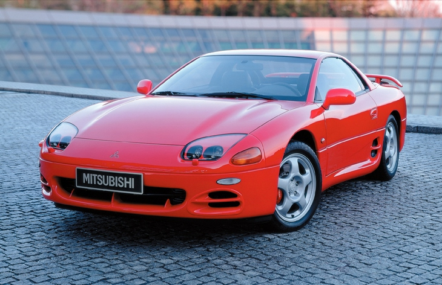
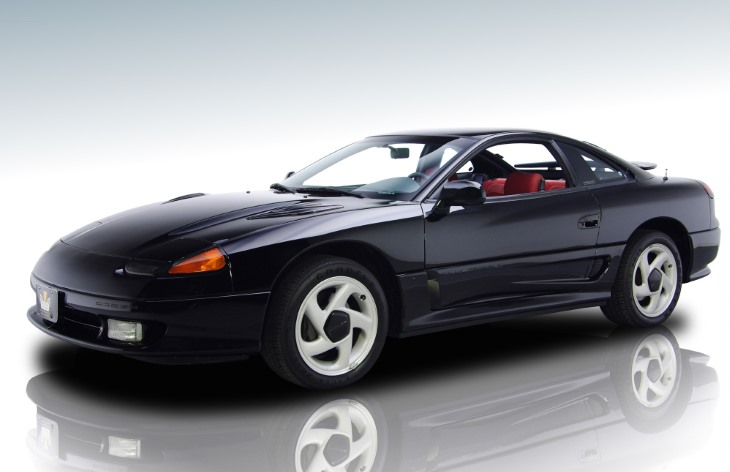

Четырехместное спортивное купе Mitsubishi 3000GT начали серийно выпускать на заводе в Нагое в 1990 году. Автомобиль, ставший флагманом модельного ряда марки, поставляли на американский и европейский рынок, а у себя на родине машина была известна как Mitsubishi GTO.
Переднеприводный Mitsubishi 3000GT оснащался трехлитровым атмосферным мотором V6 мощностью 223 л. с. Двойной турбонаддув позволял «снимать» с этого же двигателя уже 300 сил, такие силовые агрегаты ставили на полноприводную модификацию VR-4. Кроме того, у Mitsubishi 3000GT VR-4 было полноуправляемое шасси: колеса задней оси при помощи гидроцилиндров могли подруливать на угол до 1,5°. Еще одной технической особенностью машины была электрорегулируемая подвеска. Коробки передач — пятиступенчатая «механика» или четырехступенчатый «автомат».

2 поколение, 1994–2000
В 1994 году дебютировало второе поколение модели. Mitsubishi 3000GT изменился внешне, лишившись выдвигающихся фар, получил обновленный интерьер и обзавелся новыми опциями, например, подушками безопасности. Для версии VR-4 была подготовлена новая шестиступенчатая механическая коробка передач. Отдача прежнего трехлитрового «атмосферника» практически не изменилась (226 л. с.), а вот турбомотор стал сильнее — его мощность выросла до 324 л. с.
В 1995–1996 году выпускалась версия с жестким складывающимся верхом, а с 1996 года на 3000GT начали ставить двигатель V6 3.0 (162 л. с.), ранее доступный только на «Додже». Тогда же был проведен небольшой рестайлинг модели.

Dodge Stealth, 1991-1996
Dodge Stealth - это видоизмененный Mitsubishi 3000GT первого поколения. Он был дособран корпорацией Chrysler ля Северной Америки, но На Европейском рынке получил куда большую популярность. Отличался от 1 поколения 3000GT двигателем и экстерьером.
Обзор
В 90-ые годы японские производители автомобилей побаловали автолюбителей, скоростными и высокотехнологичными автомобилями. В некоторых из них были применены
технологии от которых из-за их дороговизны в дальнейшем отказались. Мир увидел Nissan Skyline R34, Toyota Supra JZA80 и не получивший такой же гоночной славы как
вышеупомянутые автомобили, но не менее достойный шедевр от Митсубиси — 3000GT. Вспомните фильм «Громобой» с Джеки Чаном в главные роли, ведь именно за рулем
Mitsubishi 3000 GT актер участвовал в финальной гонке фильма. Выпуск Митсубиси 3000 Джи Ти начался в 1990 году и завершился в 1999-ом, в отличии от младшей модели компании— Mitsubishi
Eclipse, 3000GT не перевозродилась в следующем поколении. 3000 GT – это название автомобиля предназначенного для Европейского рынка, в Японии купе Mitsubishi
называлось GTO, а в США, на заводе Chrysler выпускался двойник 3000 Джи Ти- Dodge Stealth. Сегодня встретить на дорогах 3000 Джи Ти очень сложно, модель не была
массовой и до сегодня дожили не все экземпляры, данный обзор посвящен этой культовой спортивной машине из 90-ых.
Внешний обзор Mitsubishi 3000 GT
Если взглянуть на Джи Ти, то можно увидеть компоненты системы активной аеродинамики. В систему входит спойлер под передним бампером и антикрыло на багажника
Джи Ти. Пока система не активирована передний спойлер находится в 3-ех мм под передним бампером, а угол атаки спойлера — 3 градуса, но при достижении Митсубиси
Джи Ти скорости в 80км, спойлер под передним бампером японки опускается еще ниже — на 50мм, угол атаки антикрыла при этом увеличивается до 11 градусов. При наборе
80км в час приподымается задняя часть заднего антикрыла — это также позволяет увеличить угол атаки и соответственно прижимную силу. Вы можете удивится, но столь
низкий и на вид аеродинамичный автомобиль не слишком то и аеродинамичен. При деактивированной аеродинамической системе, когда машине легче рассекать воздух,
коэффициент лобового сопротивления Mitsubishi 3000 GT – 0.39, для сравнения коэффициент лобового сопротивления Ford Sierra, который появился еще в начале
80-ых. ФОРДовцы уделяли огромное внимание аеродинамике своей массовой модели, а вот японцы стремились придать внешнему виду 3000 Джи Ти эффектности, так и
появились эти «глухие» воздухозаборники за дверьми — перед задним колесом. Прямо говоря обтекаемость не очень, но прижимная сила заслуживает аплодисментов. Первые
три года Джи Ти выпускалась с модными в то время выдвижными фарами, но после проведенного в 1993 году рестайлинга японский автомобиль получил более привычные
сегодня фары. Еще одна модернизация была проведена в 1996 году, в ходе обновления фары снова были обновлены. Помимо кузова купе, спортивный Митсубиси выпускался и
как Кабриолет, но японки с откидным верхом оснащались исключительно передним приводом и атмосферным двигателем.(Фотографии вы можете увидеть во вкладке "Галерея")
Оснащение салона
После первого рестайлинга в 1993 году передние подушки безопасности вошли в штатную комплектацию. Как Toyota Supra и Nissan Skyline GT-R, Митсубиси является
автомобилем с посадочной формулой 2+2, сзади места на самом деле очень мало, возможно не больше, чем в Eclipse, хотя Джи Ти и крупнее. Багажник японки вмещает
160 литров багажа.

 8 800 200-05-25
8 800 200-05-25